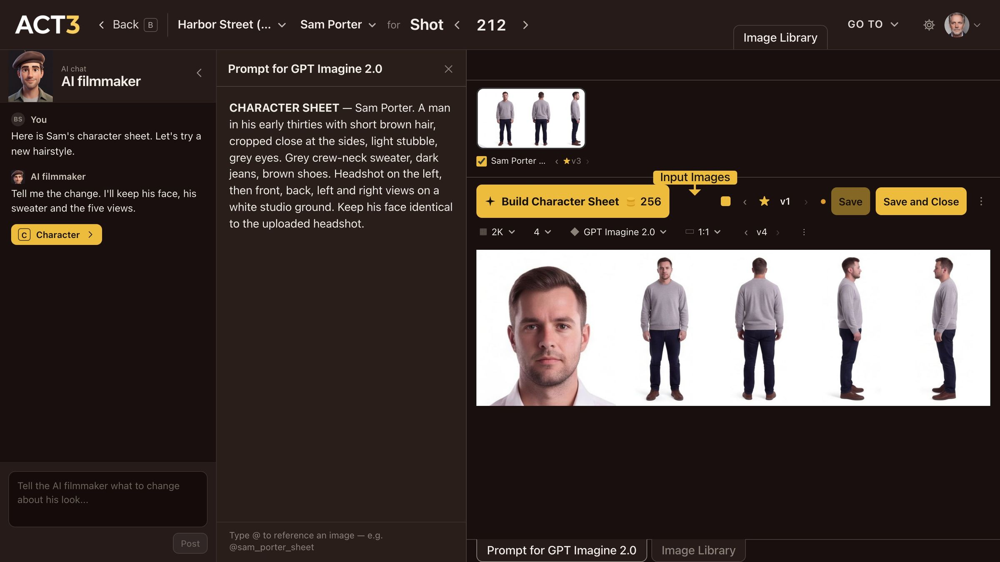
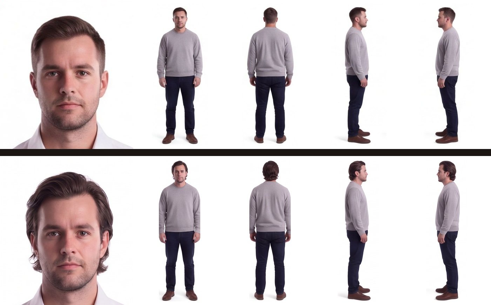

Step 8 of 8
Change the hairstyle and keep it
Tell the AI filmmaker the change, for example a new hairstyle. Click Build Character Sheet and compare the result. Click Save and Close to keep it.

Ask, Build Character Sheet, compare, then Save and Close. The face and the costume stay; only the hair changes.
Make one change at a time
- Ask. Type the change in the chat box and click Post, for example Longer hair, swept back. The AI filmmaker keeps the face and the costume unless you ask otherwise; say so if something else must stay.
- Read the prompt. The AI filmmaker rewrites the prompt in the middle column and highlights the new words. Edit them directly if you want something more exact.
- Build. Click Build Character Sheet. The coin price is on the button, so you see it before anything runs. The new sheet arrives as a new version beside the old one.
- Compare. Step between versions with ‹ v2 ›. Check the face still matches the headshot and the hair is the same in all five views.
- Keep it. Click Save and Close. The new sheet becomes the character's look, and you return to the character page. Save keeps it and stays in the Image Builder.

Your decision: which version to keep
The star marks the version the film uses. Not happy with the new one? Step back to the old version and star it, or ask for another change. Nothing is final: you can come back to the Image Builder at any time.
Where this look goes next
Every storyboard frame and first frame with this character is drawn from the starred sheet, so the new hair carries through the film. To see it in a shot, follow guide 5, Storyboard or guide 6, Improve First Frame.
Continue returns you to the Step-by-Step Guide.